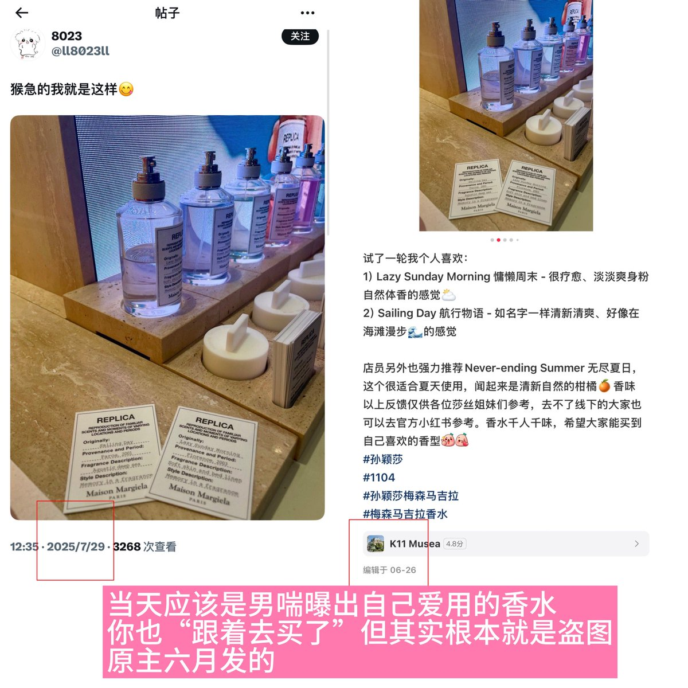

iuiing
@itsnotiuiing
RT @TT0533353451057: 狗图是偷的，狗名是瞎取的，真以为墙内的人不知道你在偷图吗？偷别人香水专柜试香图。装作很忙的医生，一天七台手术 但你这天并没有和小女孩们断互动 那张穿医护服的图也是偷的。脸照并未深究
偷来的图当作自己日常，和小女孩们互动。还请你不要在自己…

TT
@TT0533353451057
狗图是偷的，狗名是瞎取的，真以为墙内的人不知道你在偷图吗？偷别人香水专柜试香图。装作很忙的医生，一天七台手术 但你这天并没有和小女孩们断互动 那张穿医护服的图也是偷的。脸照并未深究
偷来的图当作自己日常，和小女孩们互动。还请你不要在自己造的一片看似华丽但实则虚无的废墟里迷失自己了 https://t.co/LkaGGtMrAv